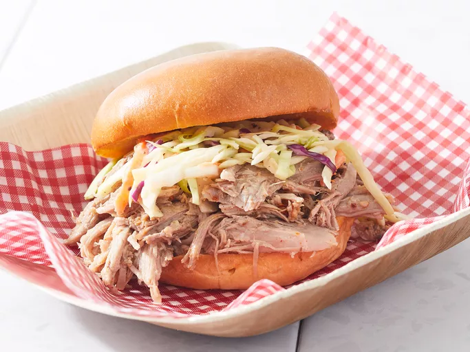

Carolina Style Pulled Pork

Carolina Style Pulled Pork
Ingredients
- 1 (5 pound) bone-in pork shoulder
- 1 tablespoon kosher salt
- 1/2 teaspoon ground black pepper, or to taste
- 1 1/2 cups apple cider vinegar
- 2 tablespoons brown sugar
- 1 1/2 tablespoons hot pepper sauce
- 2 teaspoons cayenne pepper
- 2 teaspoons crushed red pepper flakes
Steps
- Season pork shoulder with salt and pepper and place into a slow cooker. Pour vinegar around the pork and cook on low for 12 hours. Pork should easily pull apart into strands.
- Remove pork from the slow cooker and discard any bones. Strain off the liquid, reserving 2 cups. Shred pork using tongs or two forks, and return to the slow cooker.
- Stir brown sugar, hot pepper sauce, cayenne pepper, and red pepper flakes into the reserved liquid. Mix into pork in the slow cooker.
- Cover and keep on Low or Keep Warm setting until ready to serve.